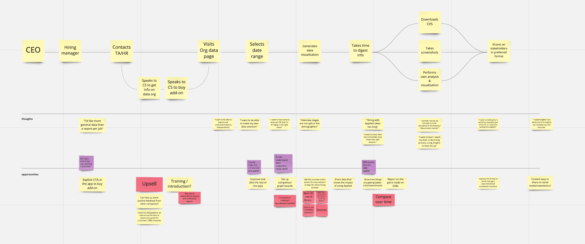
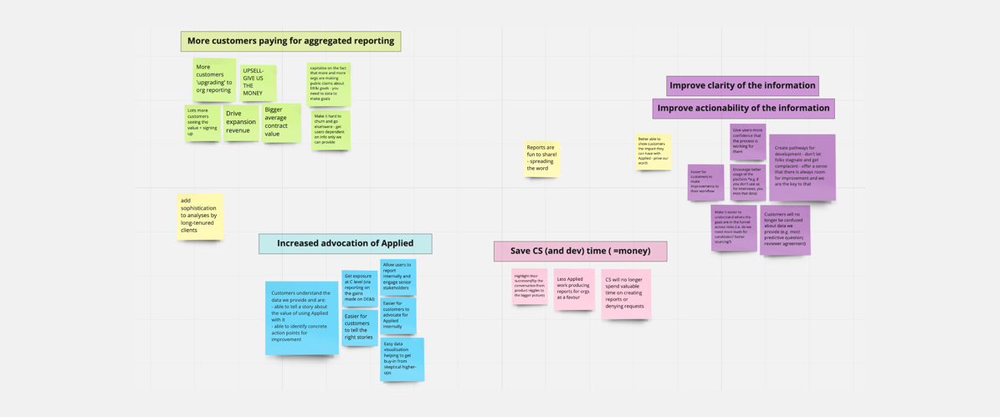
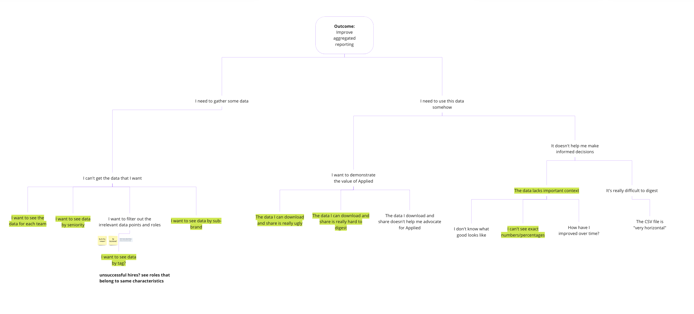
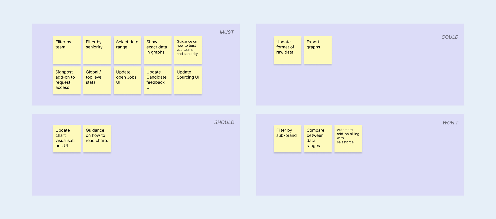
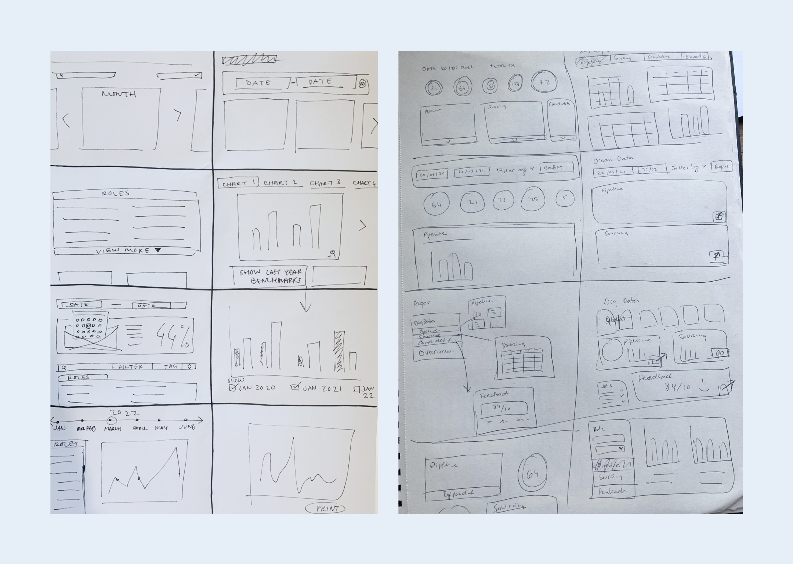
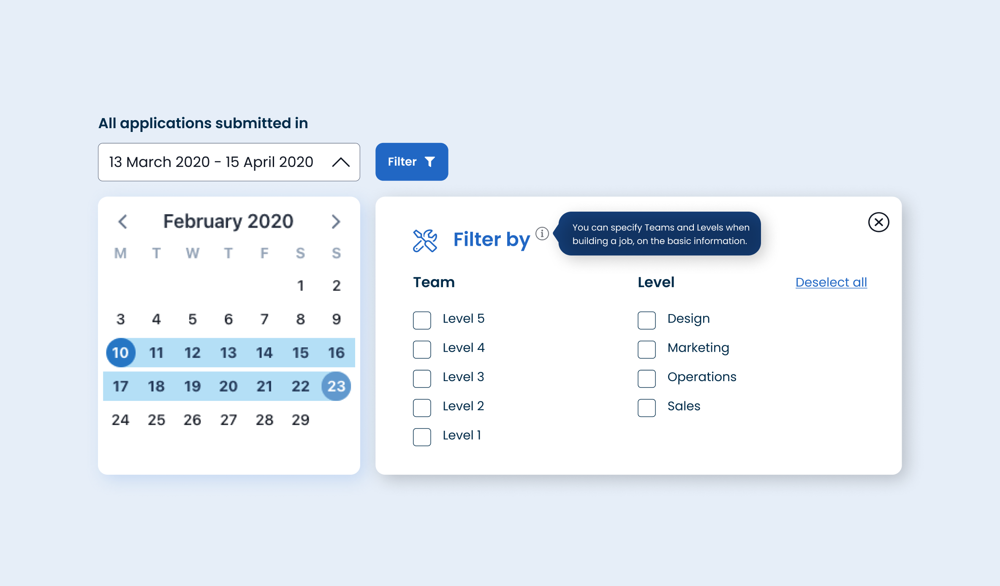
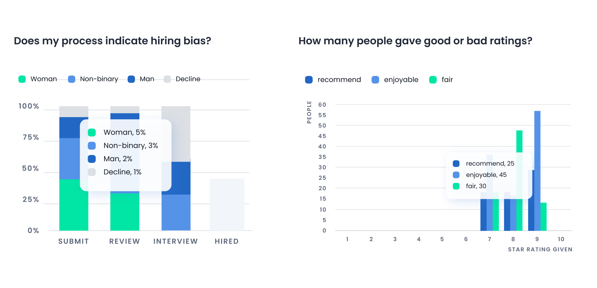
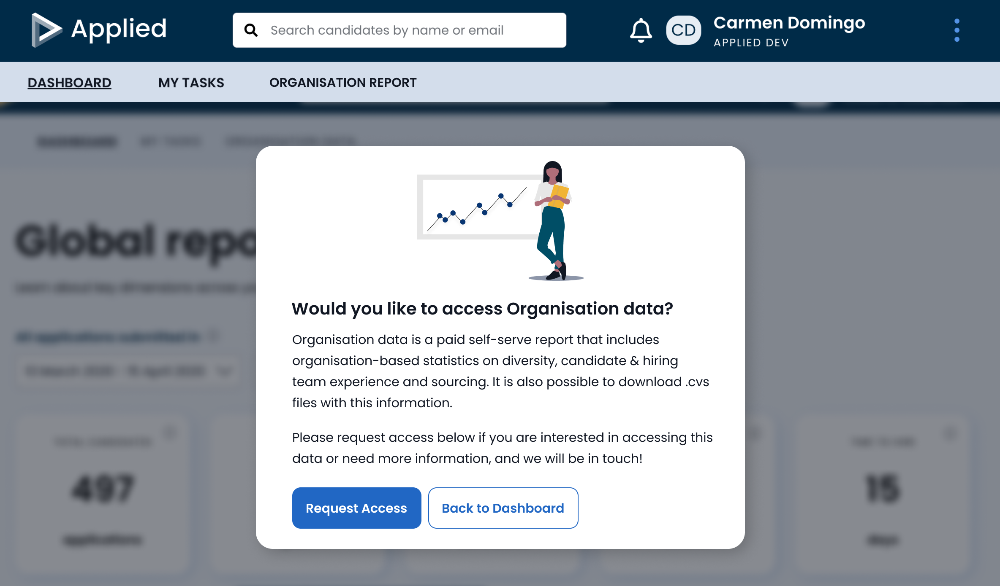
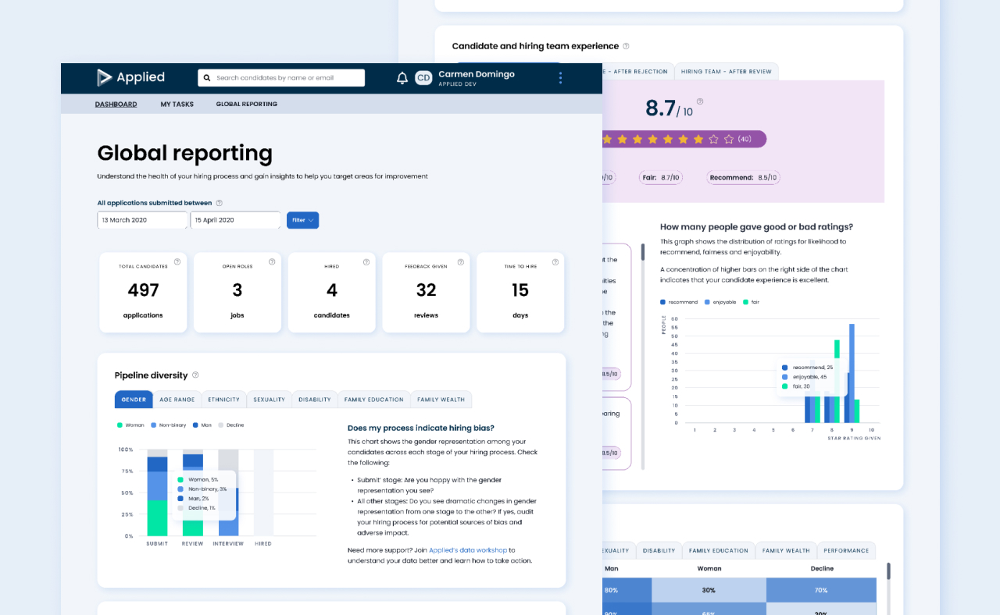

PRODUCT DESIGN – UX, UI
Creating a reporting dashboard
Overview
Aggregated (company-level) data was only offered to a small subset of customers, but the data was not useful enough to our users. Our CS and sales teams were confident that an improvement in its marketability would unlock some growth in average contract value.
Using data to help our users make unbiased decisions is one of the key USPs of Applied, so it was my aim to align this to the business goal of increasing the proportion of customers paying for this add-on.
Using data to help our users make unbiased decisions is one of the key USPs of Applied, so it was my aim to align this to the business goal of increasing the proportion of customers paying for this add-on.


Defining the problem
🤕 User Problem: Users have access to job-level reports, which helps them diagnose issues within their pipeline. However it is difficult for them to have a company-level overview that justifies why using Applied to hire to their bosses (buyer user).
🤞 Outcome: Users can obtain and provide data at a more granular level to allow them to tell stories about how Applied is impacting their hiring process.
The business outcome we wanted was to increase the proportion of customers paying for this add-on, which meant we also needed to take steps to improve its marketability.
I was involved in producing primary and secondary research. We interviewed three of our own users to better understand their reporting needs, their struggles with the current basic data, and what was expected from a paid add-on feature. We drafted a mind map that was used as a tool throughout the discovery phase. This helped us to define better the problem and decide what we were going to focus on during this limited timeline.
🤞 Outcome: Users can obtain and provide data at a more granular level to allow them to tell stories about how Applied is impacting their hiring process.
The business outcome we wanted was to increase the proportion of customers paying for this add-on, which meant we also needed to take steps to improve its marketability.
I was involved in producing primary and secondary research. We interviewed three of our own users to better understand their reporting needs, their struggles with the current basic data, and what was expected from a paid add-on feature. We drafted a mind map that was used as a tool throughout the discovery phase. This helped us to define better the problem and decide what we were going to focus on during this limited timeline.

We defined the scope to provide descriptive and diagnostic data to users – leaving more predictive and prescriptive data for future iterations.
Users wanted to be able to pull reports from each department so they could focus their efforts on those teams who needed more help, and be able to group data in a way that helped them tell the stories they needed to tell. They were also looking for data visualisations they could share with their boards. We went through ideas to validate them with these users, sharing sketches of some raw ideas and understanding how they were interacting with different elements.
Users wanted to be able to pull reports from each department so they could focus their efforts on those teams who needed more help, and be able to group data in a way that helped them tell the stories they needed to tell. They were also looking for data visualisations they could share with their boards. We went through ideas to validate them with these users, sharing sketches of some raw ideas and understanding how they were interacting with different elements.

Ideation & Design
I ran an internal ideation session involving other designers and product peers to brainstorm together and bring different perspectives to the solution. One of the most important findings we had was the risk of disclosing sensitive data when displaying granular diversity data for a very small number of candidates. This dynamic also helped me have a better understanding of tech complexity around specific functionality such as filter functionality with the third-party components used in reporting.

After refining the scope and prioritising what we would build, we decided on these priorities:
- To give more granular data, broken down by team and seniority. With an intuitive date picker tool, and seniority and team filters, users can obtain much more granular data to report on and compare in between dates. Both filters would require the hiring team to enter these when building a role so the data was clean and made it easy to compare between dates.
Applied’s design system had a very basic filter by component, which I redesigned and defined new logic for. We did usability testing for this, and consider consistency across other areas of the platform that could benefit from reusing this component.

- To improve user experience by not only showing data in a clear way but also digestible insights and guides on how to read it. We broke down data to provide insights in three main areas: Pipeline diversity – what’s the diversity of candidates at different stages of the hiring process, Sourcing insights – what outsourcing routes and job boards are bringing in more diverse talent, and Candidate and hiring team experience – how enjoyable or efficient the process is for candidates and hiring team respectively.
I designed new tooltips that would show up on hover when interacting with the different graphs to display exact percentages.

- To design a visually exciting hub, that is in line with the design style of the platform but feels fresh and elevated. We wanted our users to enjoy using this dashboard and feel like they could proudly share previews with their own teams.
I introduced a lot more colour, not only to help read data visualisations but also to bring more joy to the page. Most of the reporting components needed updating in the design system to fit withint the new style of the platform after the UI refresh that happened in 2021.

- To signpost Global reporting from the main app dashboard, where users without this add-on could access either more information or get in touch with our customer team to buy access.

Some of the success metrics we defined are:
- % of total customer base who take org reporting as an add-on
- % of customers in subset (> 1 year AND > 15 roles) who have enabled the add-on
- Increase engagement rate of current customers with reports – clicks and time interacting with graphs, refinement tools and exports.
- Positive qualitative feedback from users in collected via feedback boards
Since we launched, we’ve had an increase of users paying for this add-on, and an increase of users engaging with our new functionalities. Global reporting has also been sold at the point of renewal, during general catch up calls and email check-in. Really positive feedback coming through from customers, there’s an indication of even more granular data needed to support the diagnostic value provided to understand where to take action. To be addressed in the next iteration.
- % of total customer base who take org reporting as an add-on
- % of customers in subset (> 1 year AND > 15 roles) who have enabled the add-on
- Increase engagement rate of current customers with reports – clicks and time interacting with graphs, refinement tools and exports.
- Positive qualitative feedback from users in collected via feedback boards
Since we launched, we’ve had an increase of users paying for this add-on, and an increase of users engaging with our new functionalities. Global reporting has also been sold at the point of renewal, during general catch up calls and email check-in. Really positive feedback coming through from customers, there’s an indication of even more granular data needed to support the diagnostic value provided to understand where to take action. To be addressed in the next iteration.

Role Lead Product Designer – UX, UI
Responsibilities Primary and secondary research, concept development, and user interface design.
Launch date February 2022
Responsibilities Primary and secondary research, concept development, and user interface design.
Launch date February 2022